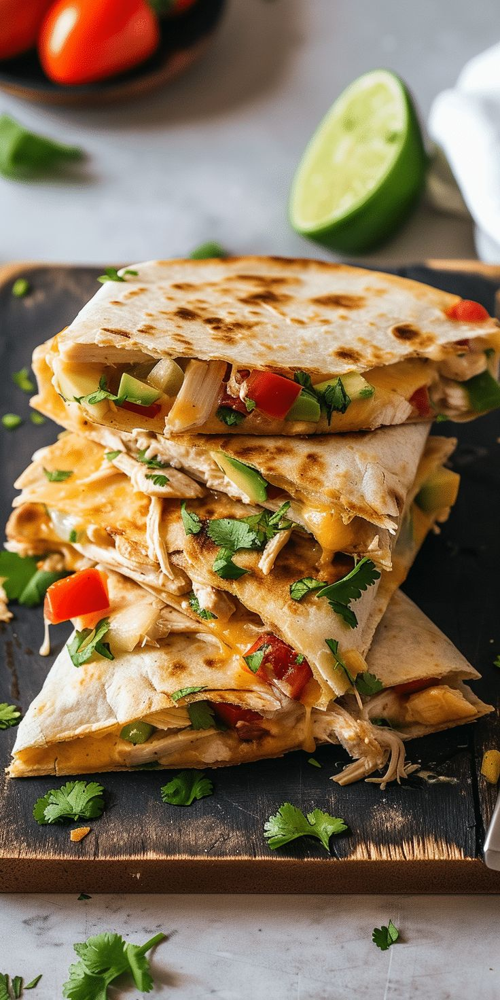

Plats typiques mexicains

Tacos al pastor
Délicieux tacos à base de viande marinée, cuite à la broche, servis avec ananas.
Pozole
Soupe traditionnelle mexicaine à base de maïs, viande et épices.

Chiles en nogada
Piments farcis nappés d’une sauce aux noix, symbolisant les couleurs du drapeau.

Quesadillas
Tortillas fondantes farcies de fromage et d’ingrédients variés, grillées à la perfection.